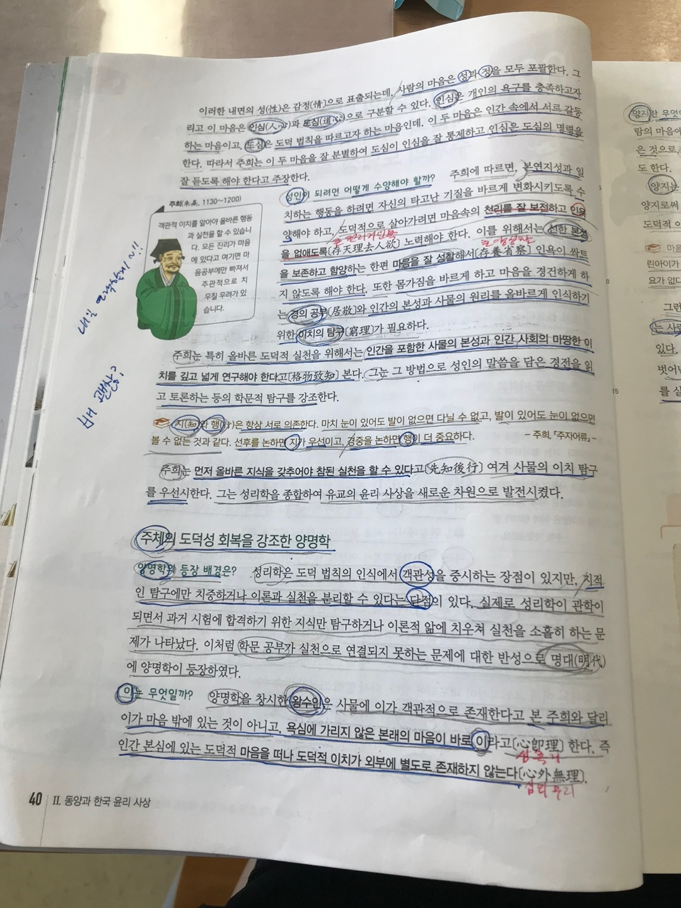
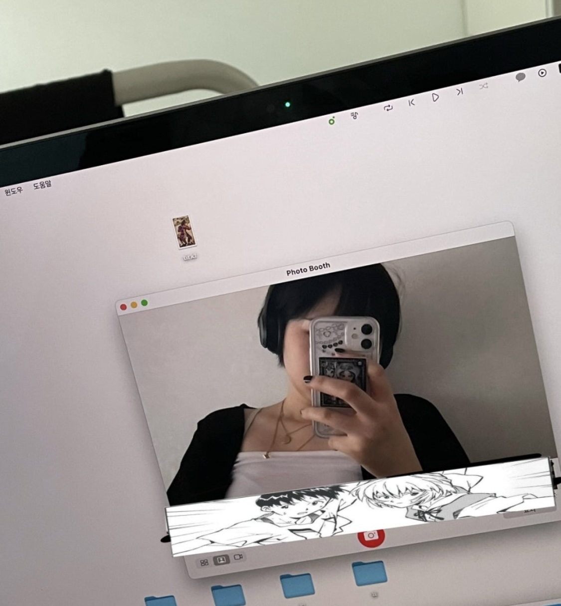
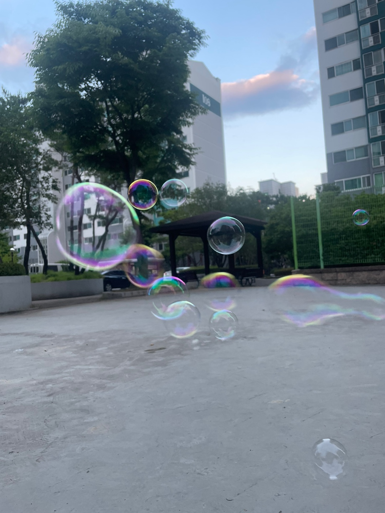

2022.06
친구랑 영화보고 걷다가 짱구 랜덤 뽑기 해서 나온 사진
짱구 갖고 싶어서 두 번 뽑았다가 신형만 유리 나와서 좌절하고
친구는 한 번만에 짱구 나왔었던 일이 있었다.
✩✩✩✩✩✩✩✩✩✩✩✩✩✩✩✩✩✩✩✩✩✩✩✩✩✩✩✩✩✩✩✩✩✩✩✩✩✩✩✩✩✩✩✩✩✩✩✩✩✩✩✩✩✩✩✩✩✩✩✩✩✩✩✩✩✩✩✩✩✩✩✩✩✩✩✩
 |
2020.06
왜 찍었는지 기억은 안 나는데 |
|
2021.06
기숙사에서 나가기 전에 찍은 사진 같은데, |
 |
|
2022.06 짱구 뽑기 실패 사진 |
|
 |
2023.06 친구랑 엽떡 먹고 카페가서 놀다가 심심해서 비눗방울 사서 불고 놀았을때 사진 |